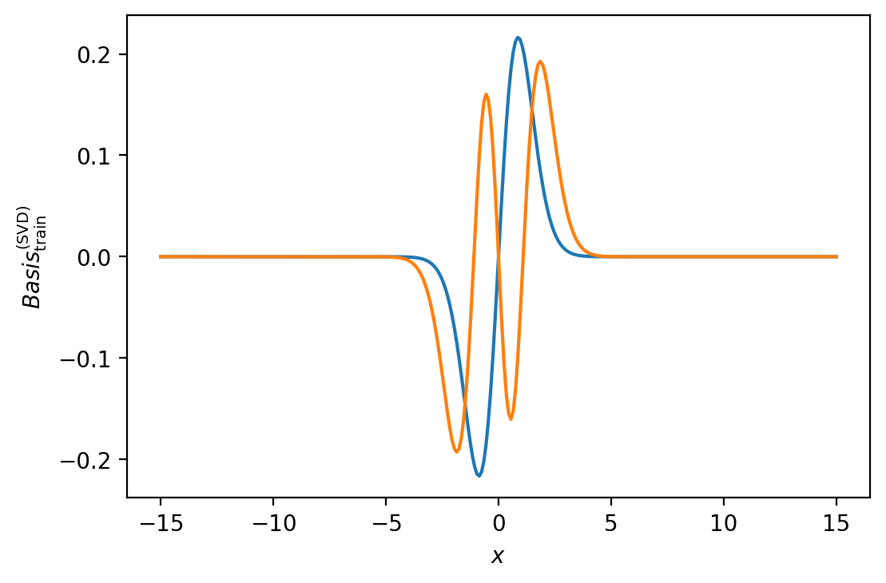
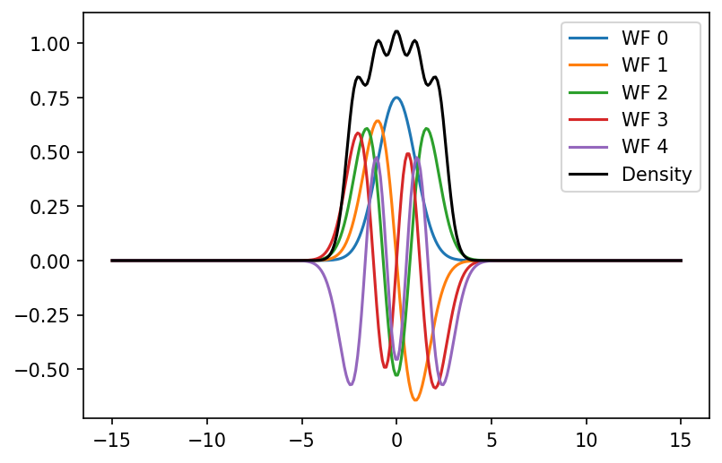
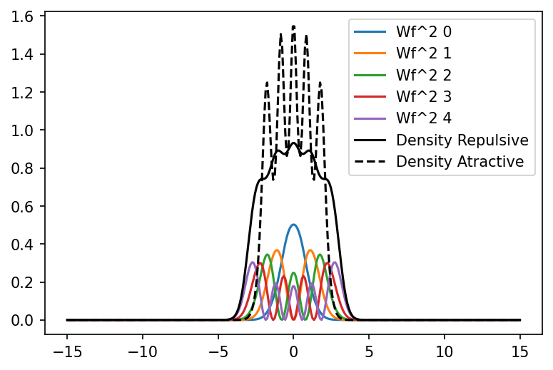
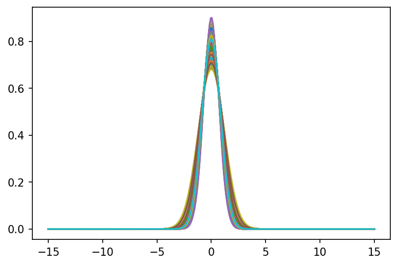
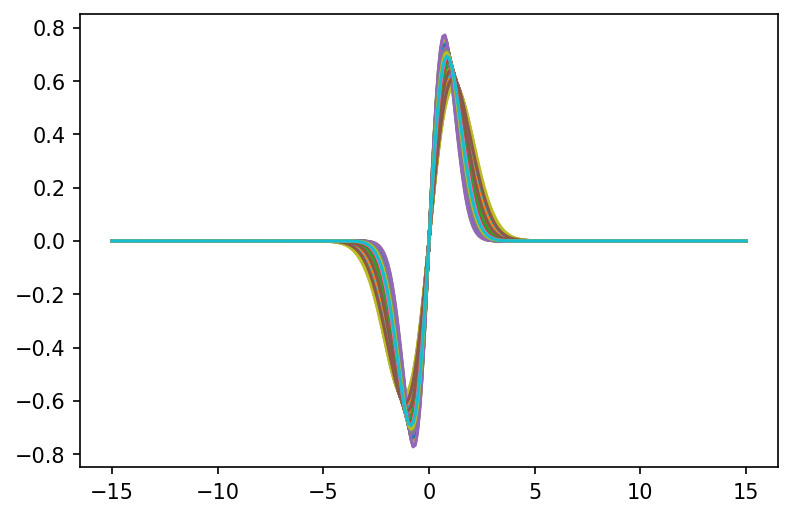
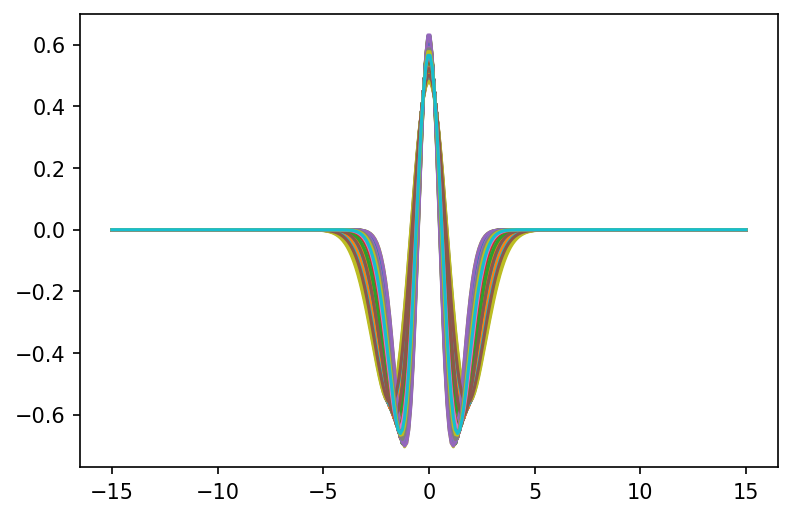
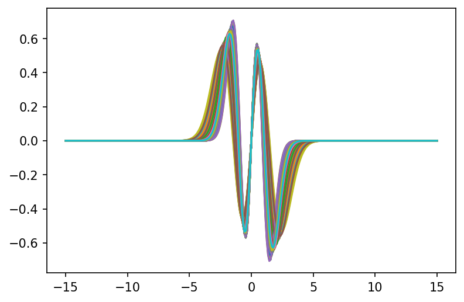
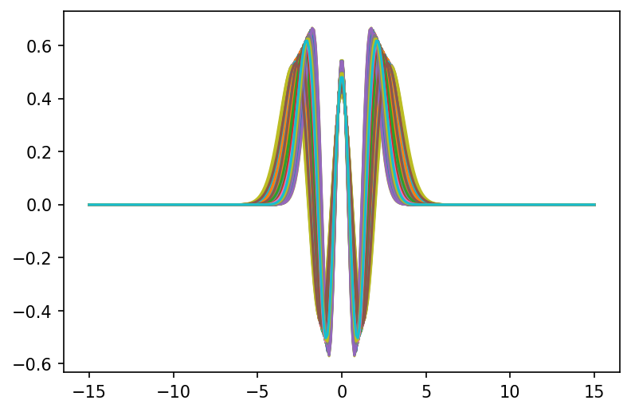

import numpy as np
import matplotlib.pyplot as plt
import time
import timeit
from tqdm import tqdm
from scipy.stats import qmc
---------------------------------------------------------------------------
ModuleNotFoundError Traceback (most recent call last)
/tmp/ipykernel_1904/914181145.py in <module>
6
7 import timeit
----> 8 from tqdm import tqdm
9
10 from scipy.stats import qmc
ModuleNotFoundError: No module named 'tqdm'
total_wfs=5
def generate_second_derivative_matrix(xgrid):
N = len(xgrid)
dx = xgrid[1]-xgrid[0]
# Generate the matrix for the second derivative using a five-point stencil
main_diag = np.ones(N) * (-5.0 /2 / dx**2)
off_diag = np.ones(N - 1)* 4/3 / dx**2
off_diag2 = np.ones(N - 2) * (-1.0 / (12 * dx**2))
D2 = np.diag(main_diag) + np.diag(off_diag, k=1) + np.diag(off_diag, k=-1) + np.diag(off_diag2, k=2) + np.diag(off_diag2, k=-2)
return D2
def harmonic_potential_matrix(xgrid):
return np.diag(xgrid**2)
def self_interaction_potential(rho,alpha):
return np.diag(rho**alpha)
def rho_maker(wf_list):
sq_list=[wf**2 for wf in wf_list]
return np.sum(sq_list, axis=0)
def list_normalizing(wf_list,dx):
return [wf/np.linalg.norm(wf)*np.sign(wf_list[0][int(len(wf_list[0])/2)])*1/np.sqrt(dx) for wf in wf_list]
def H_solver(kappa,q,alpha,D2Mat,harmonic_matrix,rho,dx):
H = -D2Mat + kappa*harmonic_matrix + q*self_interaction_potential(rho,alpha)
evals,evects = np.linalg.eigh(H)
return [evals[0:total_wfs],list_normalizing(evects.T[0:total_wfs],dx)]
#Example of a fixed grid
x_max = 15.0 # Maximum coordinate value for the grid
N_grid=300
# Set up the coordinate grid
x = np.linspace(-x_max, x_max, N_grid)
dx=x[1]-x[0]
D20=generate_second_derivative_matrix(x)
harmonic_matrix=harmonic_potential_matrix(x)
wf1=np.loadtxt("train_wf_list_1.txt")
U, S, Vt = np.linalg.svd(wf1.T, full_matrices=False)
wf1
array([[-3.17007295e-21, 1.19421244e-20, 3.51055754e-20, ...,
-3.37843600e-20, 1.61701265e-19, -7.18074107e-20],
[-2.27223364e-20, -6.23022084e-20, -1.36009644e-19, ...,
-3.01747812e-18, -4.51851440e-18, -3.54903524e-18],
[-1.80750234e-18, -3.57303461e-18, -4.76796250e-18, ...,
-5.35027549e-19, 1.58278259e-18, 2.35068052e-18],
...,
[ 7.51898998e-19, 1.49235156e-18, 2.00472090e-18, ...,
3.49856508e-19, -1.15738258e-18, -1.13024465e-18],
[-1.80292919e-19, -2.12207744e-19, -3.74491045e-20, ...,
1.89602115e-19, -2.24461302e-19, -1.86261761e-19],
[ 4.69762297e-20, 1.09068815e-19, 1.46778993e-19, ...,
-7.04772436e-20, -9.73446914e-20, -9.21001927e-20]])
nbasis = 2
fig, ax = plt.subplots(dpi=200)
fig.patch.set_facecolor('white')
for i in range(nbasis):
ax.plot(x, U[:, i])
ax.set_xlabel(r'$x$')
ax.set_ylabel(r'$Basis_{\rm train}^{({\rm SVD})}$');

#Solving the system for kappa =1 , q=0, alpha=1 just to see how it looks without self interaction
Solutions0=H_solver(1,0,1,D20,harmonic_matrix,np.zeros(len(x)),dx)
fig = plt.figure(dpi=150)
for i in range(len(Solutions0[1])):
plt.plot(x,Solutions0[1][i],label=f'WF {i}')
plt.plot(x,rho_maker(Solutions0[1]),color='k',label='Density')
plt.legend()
plt.show()

#Variables controlling the iterative method
mixing_rate=0.15
max_iteration=500
tolerance=10**(-8)
def H_solver_iterative(kappa,q,alpha,D2Mat,harmonic_matrix,dx):
Solution_current=H_solver(kappa,0,1,D20,harmonic_matrix,np.zeros(len(x)),dx)
rho_current=rho_maker(Solution_current[1])
rho_current=1/2*(rho_current+np.flip(rho_current))
eigen_vals_current=Solution_current[0]
for k in range(max_iteration):
eigen_vals_old=np.copy(eigen_vals_current)
Solution_current=H_solver(kappa,q,alpha,D20,harmonic_matrix,rho_current,dx)
rho_current=rho_maker(Solution_current[1])*mixing_rate+rho_current*(1-mixing_rate)
rho_current=1/2*(rho_current+np.flip(rho_current))
eigen_vals_current=Solution_current[0]
if (max(np.abs(eigen_vals_current-eigen_vals_old))<tolerance):
break
if k>=max_iteration-2:
print("Max Iteration Reached")
# print(k)
return Solution_current
#Solving the system for kappa =1, q =50, alpha =5
Sol_iterat=H_solver_iterative(1,5,2,D20,harmonic_matrix,dx)
Sol_iterat2=H_solver_iterative(1,-5,2,D20,harmonic_matrix,dx)
Max Iteration Reached
fig = plt.figure(dpi=150)
for i in range(len(Sol_iterat[1])):
plt.plot(x,Sol_iterat[1][i]**2,label=f'Wf^2 {i}')
plt.plot(x,rho_maker(Sol_iterat[1]),color='k',label='Density Repulsive')
plt.plot(x,rho_maker(Sol_iterat2[1]),color='k',label='Density Atractive',linestyle='dashed')
plt.legend()
plt.show()

Solving several high fidelity iterations#
kappabounds=[0.5,3]
qbounds=-2,2
alpha0=[0.5,3]
bounds=np.array([
kappabounds,
qbounds,
alpha0
])
n_train=300
sampler = qmc.LatinHypercube(d=len(bounds), seed=142857)
sample = sampler.random(n_train)
train = qmc.scale(sample, bounds[:, 0], bounds[:, 1])
n_test=300
sampler = qmc.LatinHypercube(d=len(bounds), seed=1)
sample = sampler.random(n_test)
test = qmc.scale(sample, bounds[:, 0], bounds[:, 1])
train_wf=[]
for params in tqdm(train):
res=H_solver_iterative(params[0],params[1],params[2],D20,harmonic_matrix,dx)
train_wf.append([params,res])
100%|█████████████████████████████████████████████████████████████████████████████████| 300/300 [06:00<00:00, 1.20s/it]
test_wf=[]
for params in tqdm(test):
res=H_solver_iterative(params[0],params[1],params[2],D20,harmonic_matrix,dx)
test_wf.append([params,res])
100%|█████████████████████████████████████████████████████████████████████████████████| 300/300 [05:57<00:00, 1.19s/it]
train_wf_list=np.transpose(np.array([train_wf[i][1][1] for i in range(len(train_wf))]),axes=(1, 0, 2))
#This line is done to make all the wf have the same signs
for i in range(len(train_wf_list)):
for k in range(len(train_wf_list[i])):
train_wf_list[i][k]=train_wf_list[i][k]*np.sign(train_wf_list[i][k][int(len(train_wf_list[i][k])/2+1)])
train_evals_list=np.array([train_wf[i][1][0] for i in range(len(train_wf))])
test_wf_list=np.transpose(np.array([test_wf[i][1][1] for i in range(len(test_wf))]),axes=(1, 0, 2))
test_evals_list=np.array([test_wf[i][1][0] for i in range(len(test_wf))])
#This line is done to make all the wf have the same signs
for i in range(len(test_wf_list)):
for k in range(len(test_wf_list[i])):
test_wf_list[i][k]=test_wf_list[i][k]*np.sign(test_wf_list[i][k][int(len(test_wf_list[i][k])/2+1)])
for k in range(len(train_wf_list)):
fig = plt.figure(dpi=150)
for i in range(len(train_wf_list[k])):
plt.plot(x,train_wf_list[k][i])
plt.show()





for i in range(len(test_wf_list)):
np.savetxt("train_wf_list_{}.txt".format(i),train_wf_list[i])
for i in range(len(test_wf_list)):
np.savetxt("test_wf_list{}.txt".format(i),test_wf_list[i])
np.savetxt("Training_Parameters.txt",train)
np.savetxt("Testing_Parameters.txt",test)
np.savetxt("train_evals_list.txt",train_evals_list)
np.savetxt("test_evals_list.txt",test_evals_list)